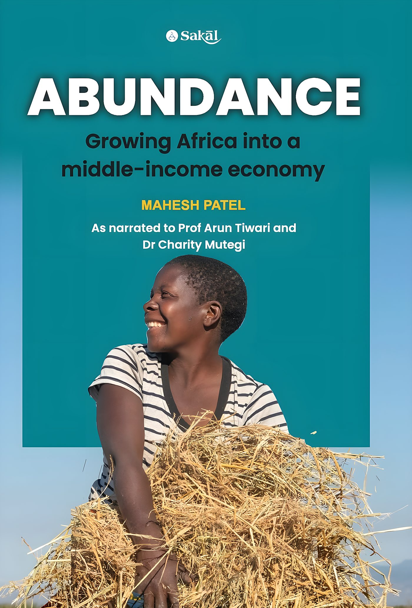
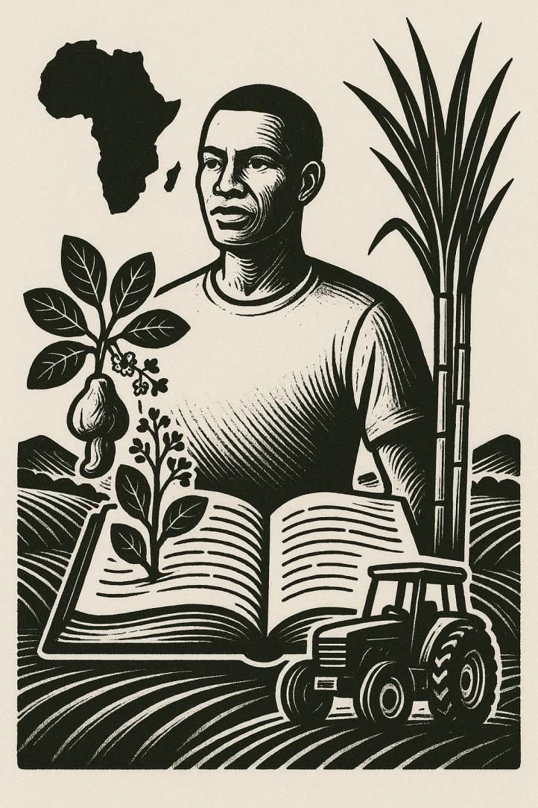
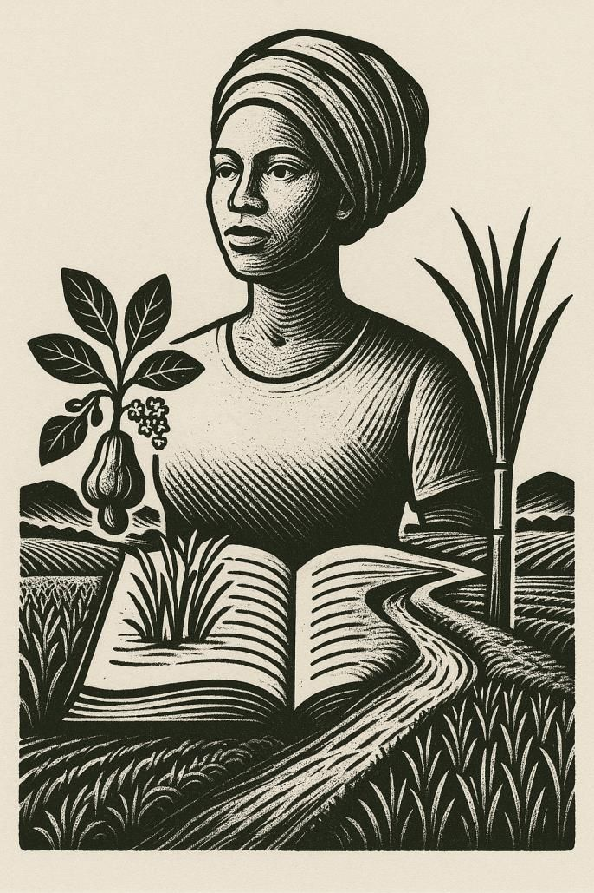
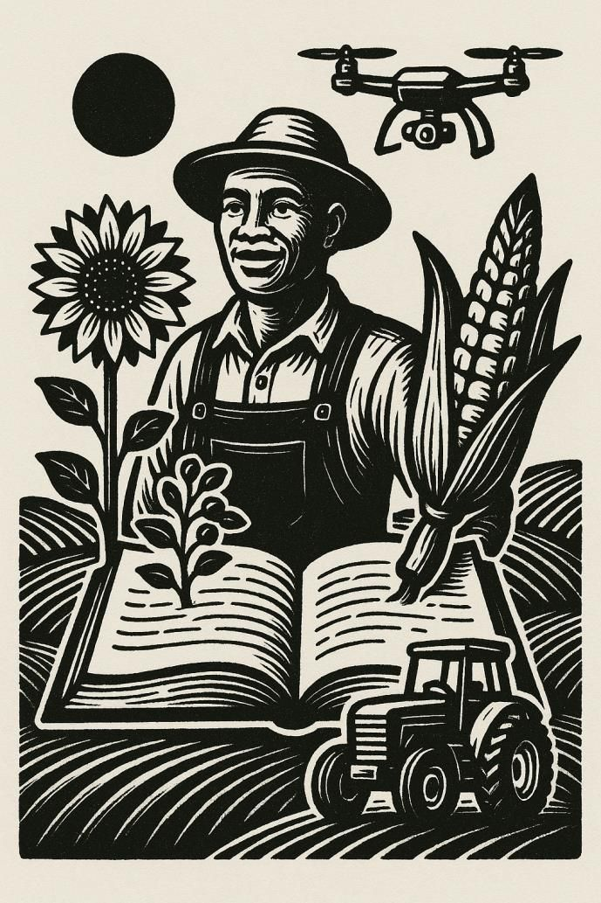

Home / Epilogue

The book that tells the whole story
Abundance is both a memoir and a manifesto: one man's journey through African agriculture, and a plan for the continent's next quarter-century. It was conceived one evening in the Seychelles in 2016, and its preface is signed in Dar es Salaam, June 2025.
- Author
- Mahesh Patel
- As narrated to
- Prof. Arun Tiwari and Dr Charity Mutegi
- Publisher
- Sakal Publications
- Shape
- Preface, 13 chapters in three parts, epilogue
“This is not just my story. It is the story of Africa's farmers, of their resilience and their promise.”
The book draws on more than forty years of connecting smallholder farmers in thirty African countries to global markets. It argues that Africa can reach middle-income status through farming, and that the continent can repeat the transformations of India and China, which lifted millions out of poverty within a generation.
Above all, he writes, it is an invitation to Africa's young people to see agriculture “not as the labour of the past, but as the opportunity of the future.”
From diagnosis to action
Each part of the book opens with a woodcut illustration. Part II is where this site's story lives: Kapunga, Zanzibar, cashew and pulses.



Contents
- Part I · The Agricultural Landscape in Africa
- ·Preface
- ·Introduction
- 1The Next Growth Pole
- 2A False Dawn to Daybreak
- 3The Resource Paradox
- 4Rethinking Food Systems
- 5Seed Sector Development
- 6An African Green Revolution
- Part II · Case Studies of Success
- 7Kapunga Rice Project
- 8Zanzibar Sugar Project
- 9Cashew Projects
- 10Growing Proteins
- Part III · Vision 2050: A Transformation Manifesto
- 11Powering Africa's Farms
- 12From Poverty to Prosperity
- 13The Path to Abundance
- ·Epilogue
Told by Mahesh Patel, shaped in conversation
Mahesh Patel
Born in Nairobi in 1955. Founder and chairman of Export Trading Group (ETG), a supply-chain company operating in more than 40 countries and employing over 7,000 people. Founder of Technobrain in 1997 and of the Empowering Farmers Foundation.
Prof. Arun Tiwari
A missile scientist who led the Civilian Spinoff of India's Defence Technology Programme, including indigenous coronary stents, and piloted the Pan-Africa e-Network project. Co-author of Wings of Fire, the autobiography of Dr A.P.J. Abdul Kalam, and author of 30 further books.
Dr Charity K. Mutegi
A Kenyan food scientist and international consultant with more than two decades in food safety and agriculture across Africa, with IITA, IFC, UNIDO and the East African Community, among others. A recipient of the Norman Borlaug Award for Field Research and Application.
“Abundance is not a gift to be awaited, but a path to be walked together—step by step, harvest by harvest.”
Request your copy of Abundance
Tell us who you are and where to send it, and the team will be in touch.